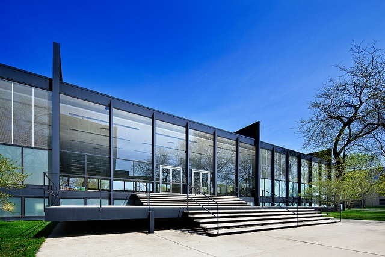
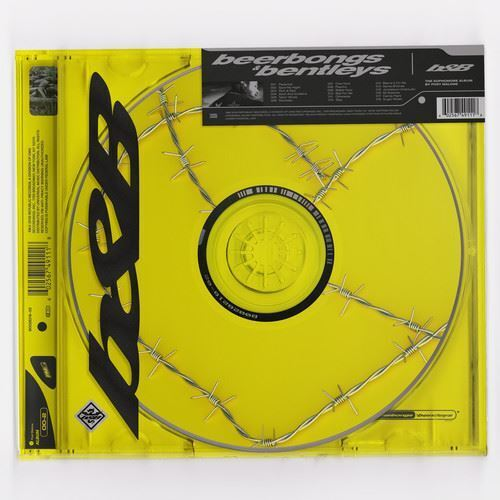

Hi! My name is Lucas and I am a 3rd year student at IIT. I am majoring in Computer Science and also play baseball here in the spring.
I currently reside on campus but I live in the suburbs of Chicago, in Western Springs. At home, I have a pet rabbit named Posty. My brother named him after Post Malone due to the fact that we got him on the same day as Post Malone's "Beerbongs & Bentleys" release date.
In my free time, I love to play guitar and video games, as well as read and hang out with friends.
This upcoming summer I have the privilege to participate in a Data Engineering Internship at Navistar, located in Lisle, IL. I am super excited to get started there and hope to gain a lot of knowledge in the field of Data Engineering.